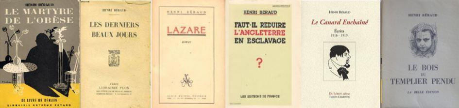
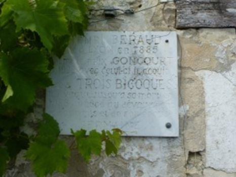
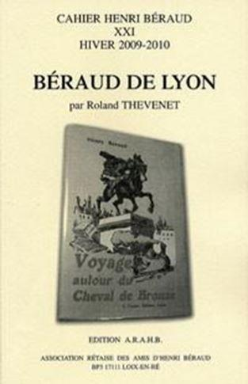
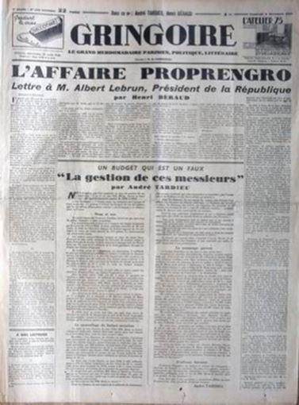
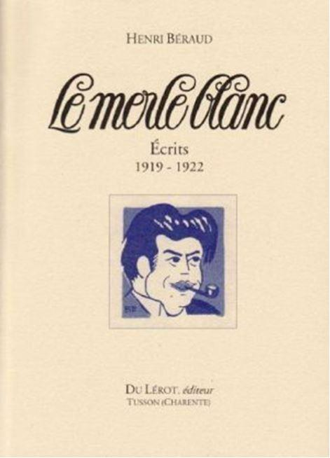

Je quitte à l’instant l’œuvre de Béraud. Et il me semble qu’il ne l’a jamais écrite, à peu de gens près, que pour lui-même. Comme tous les écrivains. Je ne parle pas, bien sûr, des grands reportages ni des pamphlets polémiques. Comme Joseph Kessel, comme Albert Londres, auxquels il ouvrit bien des portes, il rédigea les premiers pour vivre. Quant aux seconds, dans le contexte rudement cauchemardesque de la seconde moitié des années trente, il estima que c’était son devoir d'être de la bagarre en les faisant publier.
Je parle d’une bonne quinzaine de livres, ce qui n’est pas absolument rien. Et je n’hésite pas à croire que si la littérature française doit sortir vivante de la vacuité sidérante et du conformisme accablant dans lesquels l’ont plongée aussi bien l’institution universitaire que les politiques éditoriales de ces quarante dernières années, la redécouverte de cette œuvre par de jeunes ou de nouveaux lecteurs aura un rôle déterminant à jouer.
Car il y a dans la phrase d’Henri Béraud quelque chose d’asséné et de brutal, de juste et d’élégant, et même souvent de raffiné, qui fait sa fête à tout amoureux de la langue française. Henri Béraud ne fut ni un idéologue, ni un penseur, ni un politique Contrairement à beaucoup d’hommes de sa génération, il sortit la vie sauve de l’enfer des tranchées de quatorze dix-huit. Comme beaucoup d’hommes de sa génération, il sut alors qu’il avait sacrifié son existence, car la société au sein de laquelle elle s’apprêtait à se dérouler avant que la boucherie ne commence, cette société, bel et bien, n’était plus. C’est pourquoi il jeta sur le monde un regard à la fois baroque et lyrique, l’un de ceux qui siéent mal au sérieux que lui demandait son temps : un regard de revenant désenchanté. Iceberg anachronique et têtu, n’explique-t-il pas encore, en 1944 ainsi sa conception politique : « Elle s’exprime toute dans l’amour de la France , la haine des Anglais et le refus de toute obédience étrangère » Cette politique qui, dit-il « a suffi à nos vieux rois, aux hommes de 93, à Napoléon, peut bien suffire à un fils de boulanger.»
L’effacement d’un grand auteur, quel qu’il soit, est toujours significatif de quelque chose. Dans une démocratie surmédiatisée de pied en cap, le fait d’honorer chaque 11 novembre la mémoire d’un soldat inconnu est évidemment moins compromettant que le fait de perpétuer la mémoire d’un soldat qui fut trop connu et, surtout, inconsidérément bavard. Pour sa défense, c’était son métier de parler ainsi. Loin de moi l’idée d’attenter à la justesse d’une commémoration dont Béraud lui-même écrivit un jour que les Allemands nous en enviaient l’idée. Le fait est que, pour son malheur, Henri Béraud a appartenu à cette génération-là - que des cadets opportunistes auront singulièrement réduite au silence- et qui, parce que la gloriole la faisait rire, a laissé faire. Brasillach eut les honneurs d’un procès en bonne et due forme. Celui de Béraud, qui passa avant, lui, est une atroce caricature.
«Pour moi la guerre n’est pas un sujet de littérature», écrivit un jour ce dernier. Elle fut, à vrai dire, cette guerre de Trente ans qui l'a conduit de l'an quatorze à l'an quarante-quatre, un horizon indépassable qui conditionna toute sa trajectoire parmi les hommes. Tandis que d’autres, de sa génération, se bornèrent à romancer leur guerre, il s’ingénia à démontrer qu’il n’y eut pas, qu’il n’y aura jamais d’autres guerres que la guerre économique entre les riches et les pauvres, en écrivant La Conquête du Pain, un ensemble de trois récits, fondé sur la dialectique du servage et de l’affranchissement. Témoin des bouleversements irrémédiables que le siècle imprimait à la société, il a dressé le tombeau éblouissant des jours qu’il vivait à mesure qu’ils s’écoulaient. Et sur le monde contemporain qu’il traversait avec effroi, il a passé son temps à rédiger des reportages, faisant de tout, même de sa propre mort, le prétexte d’une enquête.
Parce qu’il fut identifié au régime honni de la Troisième République dans laquelle ses pamphlets lui attirèrent des ennemis en nombre incalculable, ses juges ont eu intérêt à ce qu’il disparaisse avec elle. Soit. Henri Béraud qui était l’habitant d’un autre monde, n'a pas voulu, lui-même, être du leur. Quiconque ne regarde cet autre monde qu’avec l’œil abstrait de notre époque ne comprendra rien à la beauté, à la puissance et au grand effroi dont elle porte la gravité jusqu’à nous :
« Par ma jeunesse, je touche au temps des diligences. J’ai connu les grand’routes, quand il y avait encore des auberges et des rouliers.
Mon enfance, que hante le souvenir des pataches à bâches vertes, des picotins aux relais, des palefreniers à blouses blanches et bleues et bonnets de coton, me fait plus proche de mon bisaïeul que de mon cadet, plus semblable à un Mil huit cent trente qu’à un Moins de trente ans. Et je me crois jeune ! »
Je l’imagine, parcourant à pieds les rues de Sarajevo, de l’Hôtel de Ville au pont Latinska, dix-huit ans après la mort de François Ferdinand. Il croise un cantonnier qui traîne son balai de bouleau sur la chaussée… Un garçon en veste blanche, qui prend le frais devant la boutique du coiffeur Papo.
La nécessité d’un reportage pour Le Petit Parisien l’a conduit dans ces rues. Ses yeux s’attardent sur ce garçon. Il songe, bien sûr, aux sept millions de morts de la Première Guerre Mondiale, à la génération à laquelle il appartient, lui et d’autres, la génération sacrifiée… Plus particulièrement, peut-être, songe-t-il à Paul Lintier… Le garçon en veste blanche a dix-huit ans et pour lui, écrit-il sur un carnet de notes, « cette histoire qui date de sa naissance est vieille comme le monde. »
Je l’imagine en train d’écrire à l’ancienne, dans sa bicoque de pêcheurs sur l’Ile de Ré, de nuit, sur l’ancien pétrin de son père qui fait office de bureau, non loin de la chienne Sita. Les vagues mugissent comme les mots viennent, et couchent sur le papier l’épopée des manants de Sabolas, pour remettre en adéquation l’âme inquiète d’un ancien poilu et le monde:
« Être seul dans le grand silence, avec la certitude que personne ne viendra troubler votre tâche ou votre rêverie. »
Je l’imagine, tassé entre Charles Dullin et Albert Londres sur l’impériale de l’omnibus de la Bourse, traversant Paris à toute allure, un matin de septembre 1905, provincial émerveillé.. Si l’histoire et la vie d’Henri Béraud se confondent avec celles de la Troisième République, son œuvre, elle, nous apparaît tel un creuset où toute la complexité de l’héritage littéraire du dix-neuvième siècle trouve une forme de résolution personnelle. Elle constitue également l’un des sillons les plus dramatiques d’un régime qui fit naufrage parce qu’il fut incapable d’assurer la sécurité de ses citoyens. Les enfants gavés des années soixante et de leurs succédanés oublient, lorsqu’ils considèrent les gens de cette époque, ce qu’ils doivent, eux, à la dissuasion nucléaire. Ce n’est pas le moindre mérite des pamphlets si décriés de Béraud, de nous le rappeler.
Lorsqu’il naît, en 1885, la Troisième République n’a que quelques années de plus que lui. Jules Grévy, premier président élu dans les formes définies par la constitution, ne siège à l’Elysée que depuis six ans. On ne fête le Quatorze Juillet que depuis cinq. L’enseignement primaire n’est gratuit que depuis quatre. Plus d’un français sur deux est alors paysan. Le bilinguisme, le voyage à l’étranger ne concernent qu’une élite fort restreinte. Lyon, sa ville natale, est en pleine restructuration. Malgré le centralisme parisien et l’académisme rigoureux qui régit la vie intellectuelle entre Saône et Rhône, il décide d’y tenter une carrière littéraire et journalistique en publiant plusieurs recueils de nouvelles et en fondant une revue polémique mensuelle, l’Ours.
Enrôlé à 29 ans dans la Première Guerre Mondiale, il en revient, bardé de certitudes, de dégoût, de nostalgie, d’espérances, et le cœur lourd de quelques serments, prêt à empoigner d’un poing vif tout ce que le Paris des années vingt peut proposer à une ambition provinciale. A L’œuvre, il débute une brillante carrière de journaliste en couvrant l’Ouverture de la Conférence de la paix au Quai d’Orsay. Au Petit Parisien, il devient grand reporter.
Prix Goncourt en 1922, il arpente l’Europe durant deux décennies et publie, d’abord dans les colonnes des quotidiens, puis en recueil autonome, une série de reportages politiques (Le Flâneur salarié, Ce que j’ai vu à Moscou, Ce que j’ai vu à Berlin, Rendez-vous européens, Ce que j’ai vu à Rome, Emeutes en Espagne, Vienne clef du monde, Le Feu qui couve) dans lesquels il enregistre avec inquiétude les dangers que font peser sur la paix du monde les malfaçons du Traité de Versailles.
Spectateur narquois de l’échec du Bloc national (1919-1924), de la faillite du Cartel des gauches (1924-1926), de la crise de 1929, de la ronde des ministres et des gouvernements, de la chute inexorable du franc, Henri Béraud se tient tout d’abord en marge d’un monde politique qui le dégoûte profondément et entreprend une œuvre importante d’écrivain (Le Bois du templier pendu, La gerbe d’Or, Les Lurons de Sabolas, Ciel de suie…). Mais au lendemain de l’Affaire Stavisky et du 6 février 1934, convaincu que la politique étrangère des dirigeants français successifs est inconsciente de ce qu’il appelle le Feu qui couve, et que le pays s’enfonce avec aveuglement dans une crise dont il ne sortirait pas indemne, il s’engage, au nom des « serments sur les morts » de « la der des ders » dans une polémique virulente contre le parlementarisme corrompu de la Troisième République.
Il devient éditorialiste à Gringoire où Horace de Carbuccia le lie par un contrat exclusif. La violence de ses attaques contre Daladier, Salengro, Blum, l’outrance de son anglophobie font de lui le porte-parole dans l’opinion d’un nationalisme fougueux et radical, auquel son nom demeure encore aujourd’hui attaché. Béraud, pourtant, n’a appartenu à aucune ligue fasciste. Il fut même l’un des premiers à distinguer clairement et à dénoncer publiquement la dictature stalinienne, le fascisme mussollinien et la montée de l’antisémitisme dans l’Allemagne des années 20. En juin 40, s’il se rallie à Pétain, insulte les gaullards, c’est pour rejeter avec autant d’horreur toute collaboration avec les Allemands que toute alliance avec « l’ennemi héréditaire ».
Comme beaucoup d’anciens poilus de sa génération, il s’enferme alors dans une vision nostalgique de l’honneur militaire et de la grandeur intraitable de la France et commence à jeter sur le monde qui l'entoure un regard figé, plein d'effroi.
La Troisième République fait naufrage; lui avec, donc, au nom d’une fidélité obstinée qui jettera le discrédit sur l’ensemble de son œuvre en le propulsant parmi les premiers écrivains condamnés des procès de l’épuration. Parce qu’il n’était précisément ni un idéologue ni un extrémiste, on s’arrangera pour qu’il incarne toute la mauvaise conscience de ce Régime désormais honni. En juin 1944, à la suite d’un procès tronqué, il ne dut son salut qu’à une intervention loyale et courageuse de François Mauriac auprès de De Gaulle qui le gracie, ne trouvant en son dossier aucune preuve « d’intelligence avec l’ennemi ». C’est ce dernier épisode que retiennent, dans l’histoire contemporaine, les gens qui parlent encore de lui sans avoir jamais lu autre chose, probablement, que quelques extraits de ses articles.
Cela revient à lire cet auteur à l’envers, pour ne pas dire ne pas le lire du tout. En marge de toutes les chapelles, alors que le genre romanesque est en pleine crise, nous avons là un authentique écrivain français, témoin précieux des troubles et des conflits d’une génération qui vécut en son cœur et en sa conscience le déchirement historique entre deux mondes. Sa prose extrêmement travaillée cherche à concilier l’héritage historique et littéraire d’avant-guerre avec ces vicissitudes. Tout change. Et pourtant rien ne change. Tel est le leitmotiv qui parcourt toute l’œuvre d’Henri Béraud, homme de goût, esthète, soldat, patriote, conteur soucieux que la littérature demeure la res publica accessible à tous.
Henri Béraud naquit à Lyon. Il en fut fier toute sa vie. « Pauvre Béraud, glorieux à la manière d’un comparse du théâtre des Célestins à Lyon devenu, par un coup de pot, secrétaire à la Comédie Française. » Le jugement d’André Salmon est dur mais révélateur d’un ostracisme bien français que, précisément, la carrière d’Henri Béraud faisait voler en éclat. Comme d’autres écrivains dits de pays, Béraud ne cessa pas, en devenant parisien, d’être lyonnais à sa façon. Mais contrairement à d’autres, Béraud connut une réussite journalistique insolente, voire dérangeante. On ne lui pardonna pas le jour venu des comptes à rendre.
Comme ses ancêtres laboureurs avaient conquis le pain, il partira donc, lui, à la conquête de la parole : C’est à la littérature, en effet, que ce fils de boulanger assigne, face aux tenants de la modernité élitiste qu’il nomme en blaguant, les Gallimardeux, la terrible mission de conserver trace de ce siècle, le XIXème, dont il a vu s’évaporer chaque jour un peu plus les odeurs et les nuances, de cet autre, le XXème, dont il saisit avec finesse toutes les convulsions, les utopies, les aspirations. De l’arrière boutique de la Gerbe d’or de son enfance à la cellule du bagne de l’Ile de Ré de ses avant-derniers jours, Béraud n’a cessé, tel un géomètre, de mesurer des écarts, d’interroger la modernité, d’assurer des transitions. L’homme n’a pas toujours eu raison. Souvent, il n’a pas eu tort.
Béraud a beaucoup été aimé. Béraud a beaucoup exaspéré. Béraud a beaucoup été jalousé. Béraud a été condamné. Et puis il a été oublié. Étrange prémonition, que cette remarque sous sa plume, qui date de la fulminante croisade des longues figures, contre celle de Gide et celles des Gallirmardeux :
« En littérature, paraître est bon mais disparaître est excellent. On connaît ainsi tous les avantages de la curiosité publique et l’on s’épargne les incommodités de la critique. »
Aujourd’hui, Béraud a bel et bien disparu. Naguère tiré à des centaines de milliers d’exemplaires, ses livres ne sont accessibles aux amateurs qu’au prix de récurrentes et onéreuses errances chez les bouquinistes : Grands reportages, pamphlets, nouvelles, romans, souvenirs : C’est un point de vue singulier sur toute une époque qui, avec elle, risque de disparaître.
Les Français d’Après-Guerre et leurs enfants des années soixante ont eu des comptes à régler avec l’histoire récente de leur pays, certes. Béraud s’était trouvé déporté du mauvais côté, soit. Le temps a passé, celui des cours de justice et celui des règlements de compte. L’œuvre peut être relue, jugée d’un regard critique et dépassionné. Un jour, c’est toujours l’histoire d’une illusion, autant que l’illusion d’une histoire, que toute grande œuvre raconte à ceux qui s’intéressent encore à la littérature et à leur passé. De l’expérience des tranchées et des serments d’honneur faits sur les morts jusqu’à l’épreuve de sa propre condamnation à mort par les tribunaux de l’épuration en décembre 44, en passant par la violence verbale des joutes polémiques, l’œuvre a pour axe cette exploration presque méthodique de l’effroyable violence humaine.
Une façon d’être et d’écrire turbulente et chaotique, irrégulière vis à vis des façons de penser institutionnelles, c’est certain. Romanesque et vécu se côtoient, jusqu’à cette plongée dans les geôles de l’épuration et ce procès ubuesque qui apparaît presque comme une expiation désirée de l’effroi d’avoir survécu. Espérons que pour l’œuvre de Béraud, l’instant du purgatoire approche. En littérature, telle doit se manifester, envers et contre tous, la force du temps.
Partager cette page